case study
Helloyumi.com
Redesigned helloyumi.com.
Read More 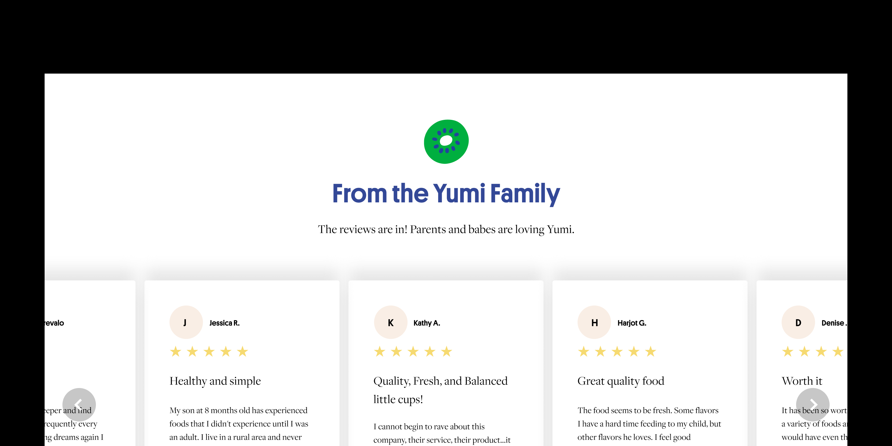
In order to keep up with the needs of a fast-growing startup, Elinor (UX Director) and I set out to reimagine and improve the state of helloyumi.com. We created modular components that helped fast track the implementation of Yumi's current site and visual brand.
Challenges
The first major challenge was creating a typography language that worked well with the Yumi brand. We needed something that made Yumi stand out from its competitors, while being functional.
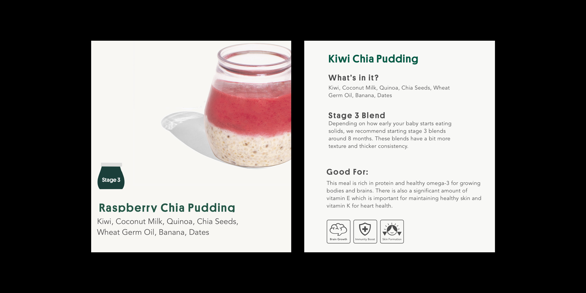
The second challenge was bringing back illustrations into our visual world. Since the relaunch of helloyumi.com aimed at including a human touch to the site through photography, it caused a reduction of illustration and subsequently made the site less playful.
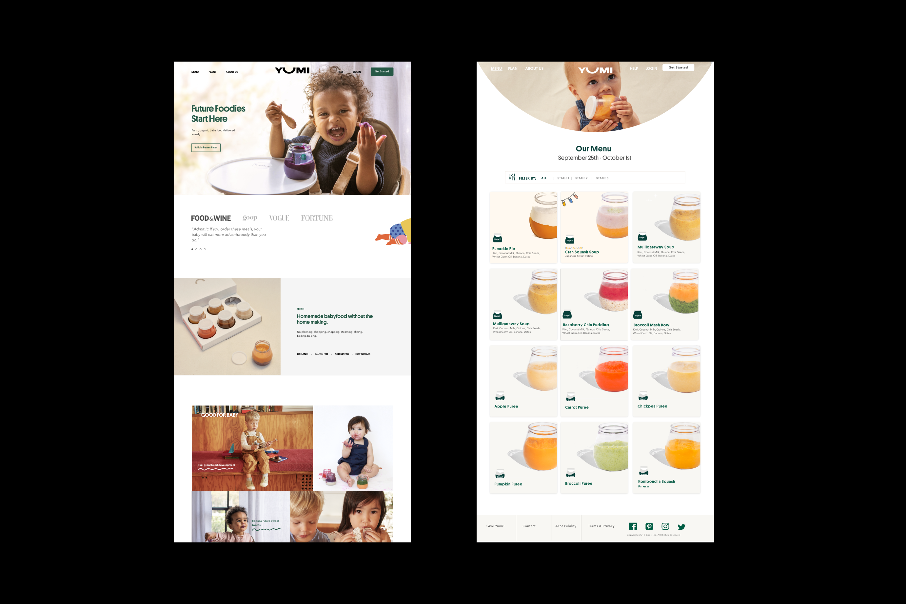
Since our team consisted of 2 designers and 3 developers, we found our third challenge to be of creating a faster way of producing pages for our site. All components in our previous site lacked consistency and since pages were limited, there was an absence of precedence on how the site should look like.
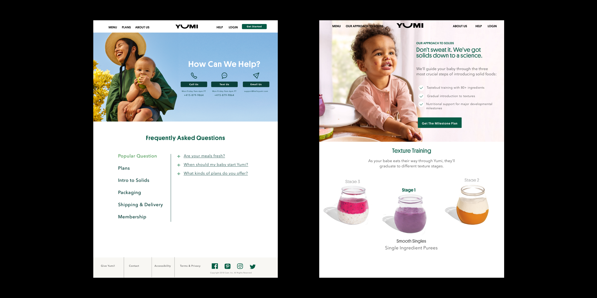
Solutions
In order to find an interesting pairing of typefaces that had good contrast Elinor and I worked with the Yumi founders to choose our branded typefaces, Platform and Freight. Platform was originally picked for its contemporary and approachable, playful letterforms, and familiarity as it was previously used as our brand's main typeface. Freight was picked for its classic style and scalability.
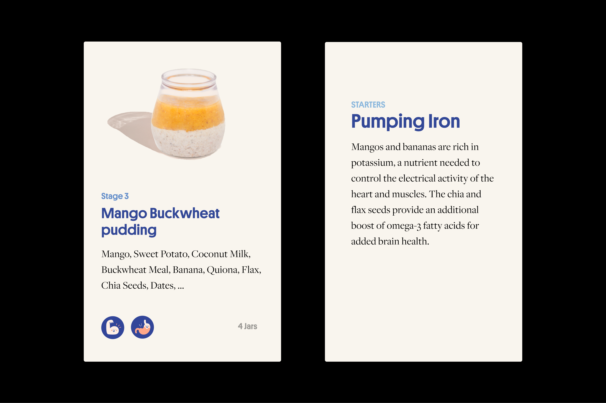
To include more illustration throughout the site, I iterated and prototyped a set of pages and components to include the illustration system Elinor composed with our freelance illustrator, Susie Hammer. Our final decision was to include illustration as page accents, to bring a playful balance between whitespace and photography, value props, to help capture ideas and tell stories, and title breaks, to help separate components.
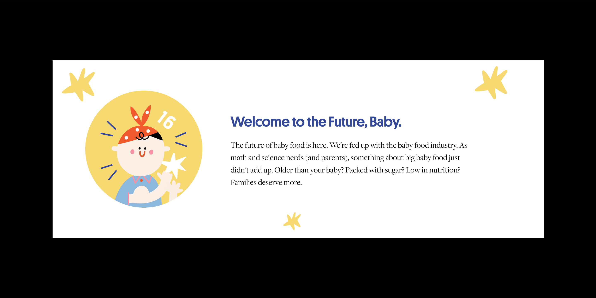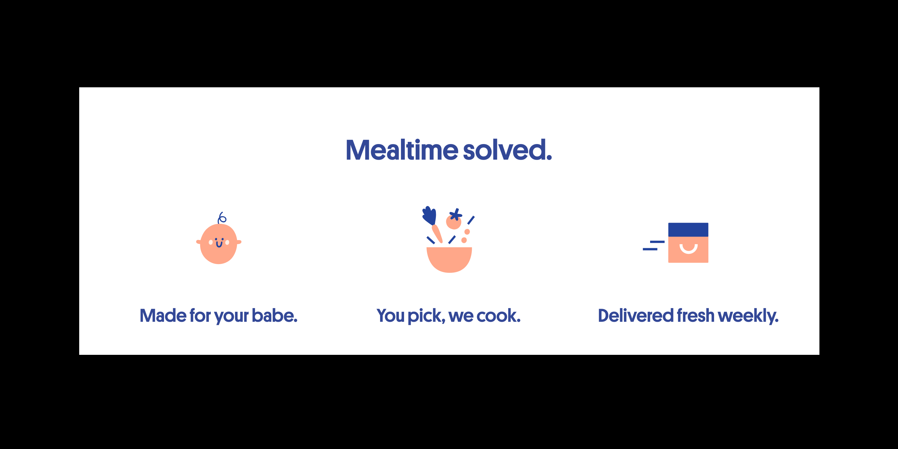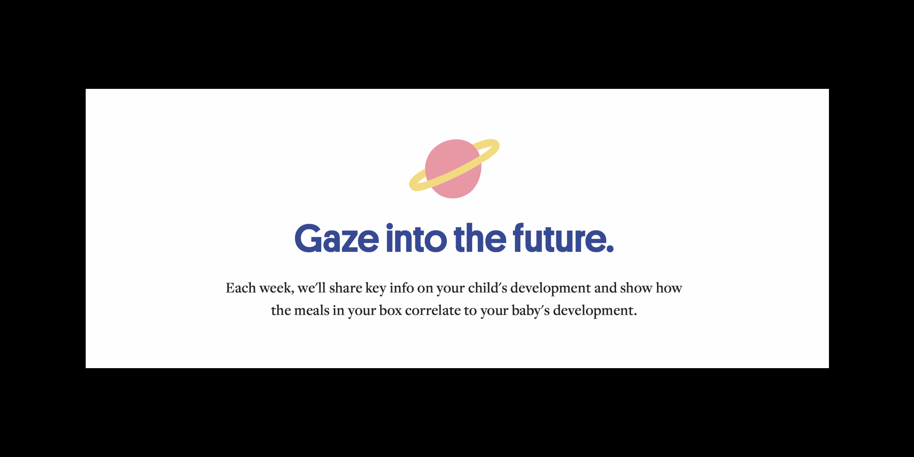
To speed up our development, we created a set of guidelines for our type system, web components, and page layouts that were responsive to desktop and mobile devices. I then guided our development team through making styled components that followed our style guidelines.
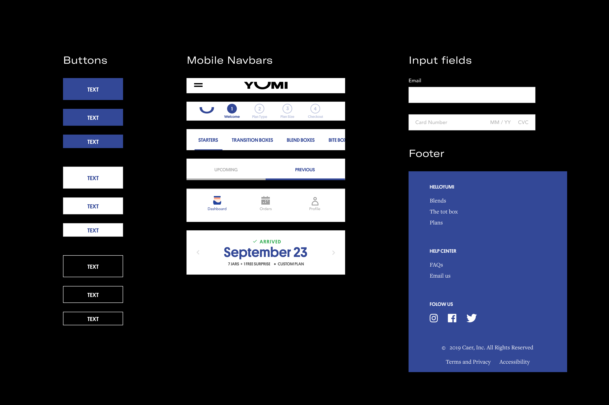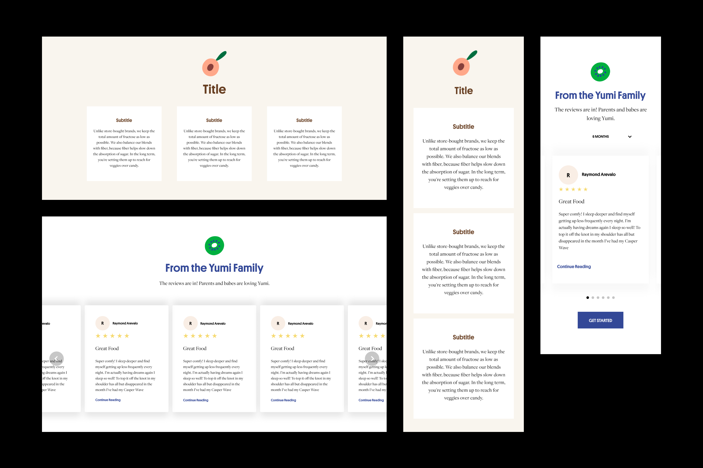
Outcome
With a background in human computer interaction and computer science, working as a sole visual designer at a fast-growing startup coming straight from university has given me an interesting learning experience.
In order to meet the demands of my role, implementing and improving the state of Yumi's visual brand, I had to learn how to be adaptive, an effective collaborator, and maintain a beginners mindset.
Since our team consisted of one UX director (Elinor) and one Visual Designer (Me), I was required to take on a lot of hats while improving the state of helloyumi.com. Overall I had the opportunity to experience growth in product, branding, marketing, and leadership.
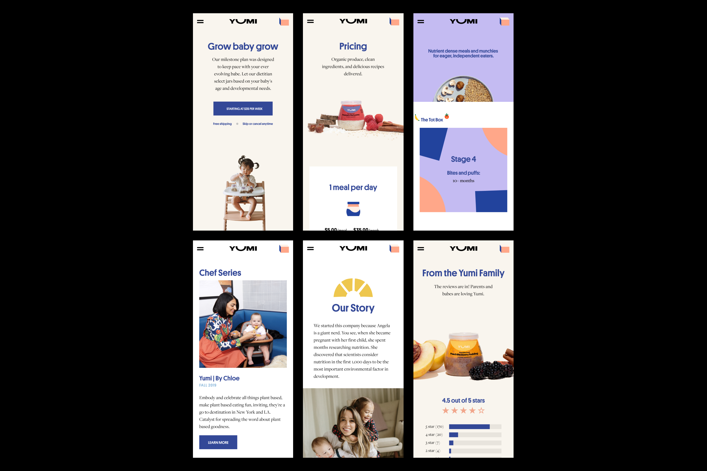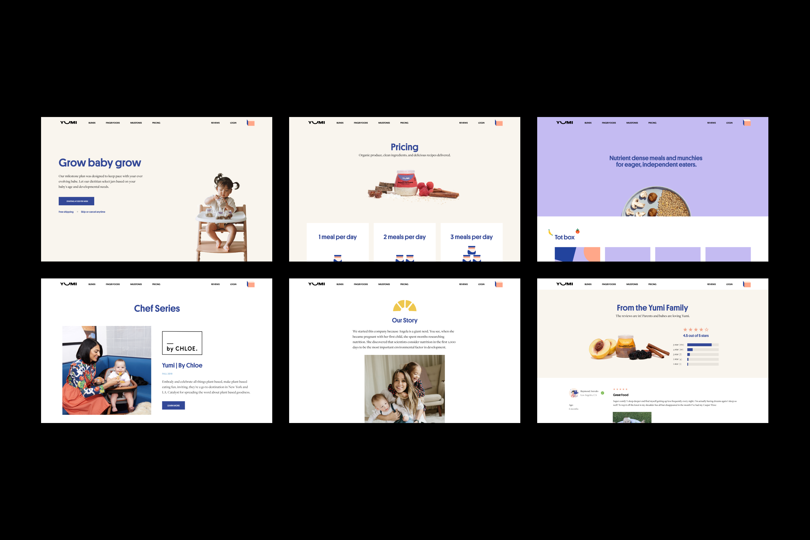